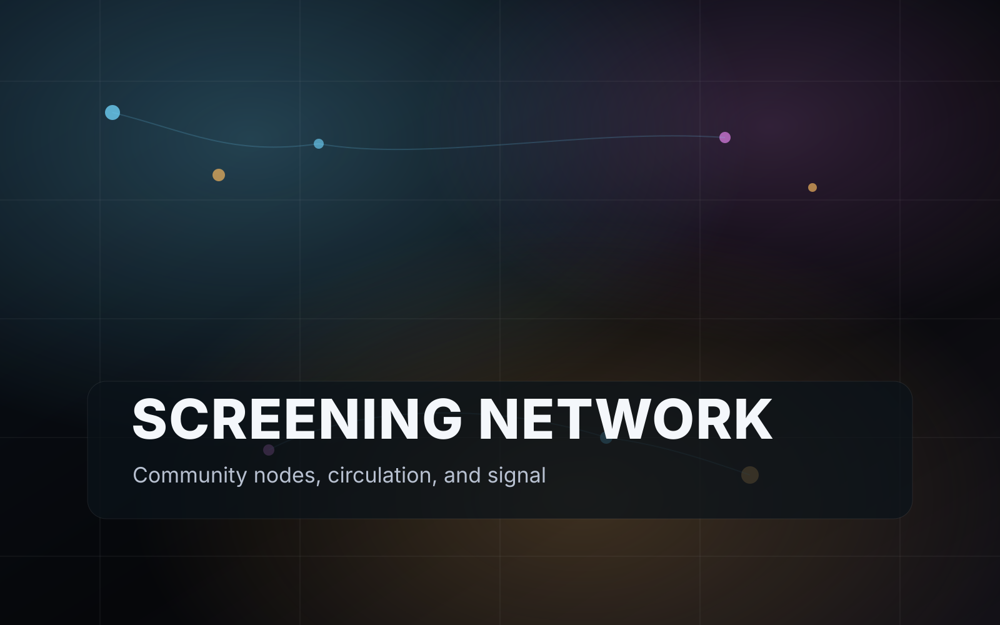

High-friction independent filmmakers
Directors, producers, and small rights-holding teams with politically sensitive, taboo, inconvenient, or nuance-heavy films that struggle to find fair distribution.
UNBURIED is a premium screen network for culturally important films that get stalled, softened, or stranded in broken release systems. It gives filmmakers a cleaner path to direct revenue, local circulation, audience ownership, and lasting reach.
Premium watch page, direct checkout, filmmaker note, and audience capture in one clean flow.
Community screening request approved with promo kit, rights cleared, and ticket page ready.
Rights holder, host, and platform splits tracked in one ledger.
A world where truth-bearing films can circulate through living communities, not die in gatekept bottlenecks.
Direct purchases, local rights sales, screening revenue, support campaigns, audience ownership, and resilient rails.
Start where the pain is hottest: films facing structural distribution friction. Expand under a premium umbrella brand.
Join early. Help shape the network. Back the first wave of films that should never have been buried in the first place.
The real pain is not only censorship. It is suppression plus fragmentation plus financial fragility plus operational overload.
The center of gravity is the filmmaker or rights-holding team carrying a culturally important film that the normal system is structurally bad at handling. Around them sits the host network, educator layer, and aligned capital needed to help those films circulate.
Directors, producers, and small rights-holding teams with politically sensitive, taboo, inconvenient, or nuance-heavy films that struggle to find fair distribution.
Educators, cultural venues, organizers, podcasters, activist networks, nonprofits, and local nodes who want to bring meaningful films to their people without legal confusion.
Builders and capital partners who care about open money, artist entrepreneurship, resilient rails, and direct relationships between creators and communities.
It will look like a premium rights network that combines direct commerce, community screenings, clean catalog curation, and resilient payment options in one operating system.

We unify the parts filmmakers currently have to stitch together alone: funding, release, direct sales, local screenings, educational rights, audience ownership, and resilient settlement rails.
No open sludge. No low-signal flood. A selective home for films facing structural distribution friction.
Rent, buy, gift, host, license, support, and later fund. Keep rights by default.
Local hosts, educators, venues, and partner communities become the film’s living distribution engine.
Mainstream rails for ease. Resilient rails for continuity. Portable audiences so no single vendor owns the whole organism.
This product is built around the flow real filmmakers need, not the categories a traditional distributor prefers.
Run support campaigns, completion pushes, and pre-sale offers before release.
Open rentals, purchases, gifts, and rights-aware viewing windows.
Approve local screenings, educational access, and community distribution rights.
Own the audience relationship and keep the film alive beyond one burst of attention.
Viewers find films through trusted curation, issue hubs, and host networks.
Hosts bring films to towns, schools, venues, and communities.
Backers help upcoming titles finish and launch with more leverage.
Stories move through people, not just feeds, and revenue reaches creators directly.
Get the first narrative-friction field guide: a concise report that names the seven chokepoints most likely to bury an important film, the revenue lanes most teams miss, and the fastest path from stalled to circulating.
This is for people who want sharper language, cleaner strategy, and a serious early look at the network taking shape.
Join for the first field guide, launch updates, pilot invitations, and the opening wave of filmmaker, host, and investor briefings.
| Revenue lane | What the buyer does | Why it matters | Starting split logic |
|---|---|---|---|
| VOD rentals and purchases | Rent, buy, gift, pre-order | Fastest path to direct creator revenue | 85% rights holder / 10% platform / 5% affiliate |
| Community screenings | Host a local event with rights cleared in-platform | Turns passive viewership into movement-level circulation | 60% rights holder / 25% host / 15% platform |
| Educational licensing | License for campus, classroom, library, or institution | Long-tail revenue and durable legitimacy | 70% rights holder / 20% platform / 10% referrer |
| Funding campaigns | Support, pre-buy, fund completion, reserve screenings | Supports up-and-coming films before release | 95% project / 5% platform plus fees |
Filmmakers respond to relief from release chaos. Hosts respond to clarity and legitimacy. Investors respond to transaction logic and reusable infrastructure. The page needs to make that obvious within seconds.
The right filmmaker forwards this to a producer. The right host sends it to a venue partner. The right investor sends it to another operator. Clear language makes serious people recruit the next serious person.
Not just hosting. Not just fundraising. Not just screenings. A coherent path from film to revenue to audience to long-tail circulation.
Broad umbrella brand. Explicit high-friction flagship lane. That keeps the mission sharp without reducing the whole company to a single oppositional identity.
Yes, in layers: support campaigns and pre-sales first, ecosystem completion funds second, regulated investment handoff later if true profit participation is involved.
Because normal humans still need dead-simple checkout. The resilient move is mainstream rails for ease and decentralized rails where they add continuity and self-custody benefits.
Because a real briefing helps people explain the problem to partners, funders, venues, and collaborators. Generic updates do not do that.